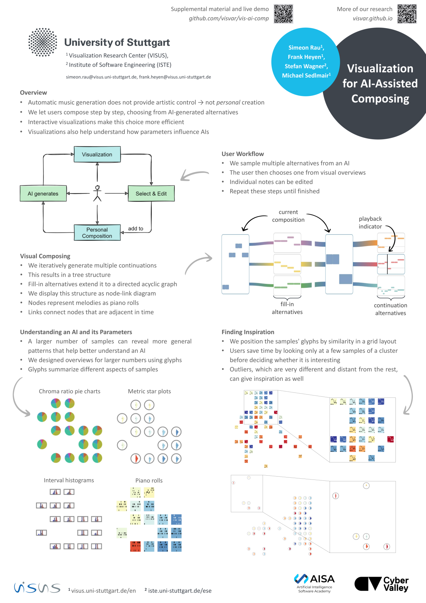

Visualization for AI-Assisted Composing


Venue. ISMIR (2022) Full Paper
Authors. Simeon Rau, Frank Heyen, Stefan Wagner, Michael Sedlmair
Abstract. We propose a visual approach for interactive, AI-assisted composition that serves as a compromise between fully automatic and fully manual composition. Instead of generating a whole piece, the AI takes on the role of an assistant that generates short melodies for the composer to choose from and adapt. In an iterative process, the composer queries the AI for continuations or alternative fill-ins, chooses a suggestion, and adds it to the piece. As listening to many suggestions would take time, we explore different ways to visualize them, to allow the composer to focus on the most interesting-looking melodies. We also present the results of a qualitative evaluation with five composers.
Acknowledgements. This work was funded by the Cyber Valley Research Fund
and the Artificial Intelligence Software Academy (AISA).
Best Paper Award Nomination